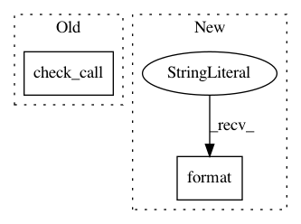

97765dcefa668e25dbb48c96b7e99442db524038,rnaseq/src/run_SamToFastq.py,,,#,19
Before Change
subprocess.check_call("gzip -"+args.gzip+" -c < read0_pipe > "+fastq0+" &", shell=True)
// SamToFastq (write to pipes)
subprocess.check_call("java -jar -Xmx"+args.memory+"g "+args.jar+" SamToFastq INPUT="+args.bam_file\
+" INCLUDE_NON_PF_READS="+args.include_non_pf_reads\
+" INCLUDE_NON_PRIMARY_ALIGNMENTS="+args.include_non_primary_alignments\
+" VALIDATION_STRINGENCY=SILENT FASTQ=read1_pipe SECOND_END_FASTQ=read2_pipe UNPAIRED_FASTQ=read0_pipe", shell=True)
// Delete named pipes
subprocess.check_call("rm read1_pipe read2_pipe read0_pipe", shell=True)
After Change
+" INCLUDE_NON_PRIMARY_ALIGNMENTS="+args.include_non_primary_alignments\
+" VALIDATION_STRINGENCY=SILENT FASTQ=read1_pipe SECOND_END_FASTQ=read2_pipe UNPAIRED_FASTQ=read0_pipe"
if args.reference_fasta is not None:
cmd += " REFERENCE_SEQUENCE={}".format(args.reference_fasta)
subprocess.check_call(cmd, shell=True)
// Delete named pipes
subprocess.check_call("rm read1_pipe read2_pipe read0_pipe", shell=True)
In pattern: SUPERPATTERN
Frequency: 3
Non-data size: 2
Instances
Project Name: broadinstitute/gtex-pipeline
Commit Name: 97765dcefa668e25dbb48c96b7e99442db524038
Time: 2019-01-14
Author: francois@broadinstitute.org
File Name: rnaseq/src/run_SamToFastq.py
Class Name:
Method Name:
Project Name: Microsoft/nni
Commit Name: c29a0cc338926fc5cee287bf1f6596dc3094a3a1
Time: 2019-03-25
Author: shinaiyang@pku.edu.cn
File Name: test/remote_docker.py
Class Name:
Method Name: start_container
Project Name: nipy/dipy
Commit Name: 44abac5f9d53b4c55084d438d4cdfa10e5e7fe20
Time: 2019-07-22
Author: skab12@gmail.com
File Name: tools/make_examples.py
Class Name:
Method Name: